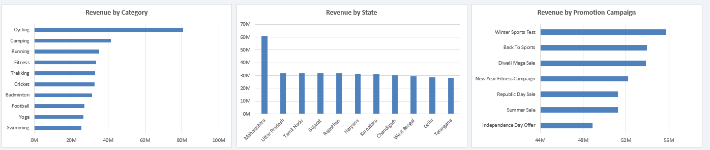

Project 02 / Retail analytics
Decathlon Retail Dashboard
Overview
Analysed a 30,000-order, 39-column retail dataset (synthetic data modelled on Decathlon India) covering sales, profit, customers, stores, channels, returns and promotions.
Used an AI assistant (Claude) to speed up exploratory data analysis: profiling the dataset, checking for data-quality issues (such as customer name and gender mismatches and city and store inconsistencies), and shaping analysis questions, then validated every output manually in Excel.
Built a VBA-automated, interactive dashboard with PivotTables, PivotCharts and 6 connected slicers (Year, Quarter, Category, Channel, Membership, Store), where one click refreshes every KPI and chart together.
Designed 6 KPI cards (Revenue, Profit, Profit Margin, Orders, Average Order Value, Return Rate) using formulas, plus charts for monthly trend, channel mix, category, state and promotion performance.
Tools & technologies
The project was built using the following tools and technologies:
- 📗 Microsoft Excel: Main platform for the project. Stored the 30,000-row dataset as an Excel Table so the dashboard grows automatically when new data is added.
- 🧩 Excel Formulas: Created helper columns such as Year_Month and Is_Returned with YEAR, TEXT and IF, and built KPI card values with GETPIVOTDATA and IFERROR.
- 🔁 PivotTables and PivotCharts: Summarized revenue, profit, orders and returns by month, category, state, channel and promotion campaign, and turned them into interactive charts.
- 🎛️ Slicers: Added 6 slicers (Year, Quarter, Category, Channel, Membership, Store) connected to a single PivotCache, so one click filters every KPI and chart together.
- 💻 VBA (Visual Basic for Applications): Automated the whole dashboard build, including layout, KPI cards, slicers, charts and the Reset Filters and Refresh Data buttons, so it can be rebuilt with one macro.
- 🤖 Claude (AI assistant): Used to speed up exploratory data analysis, data-quality checks and code generation, with all outputs manually validated and debugged.
Dashboard previews



Content from the project README on GitHub ↗.